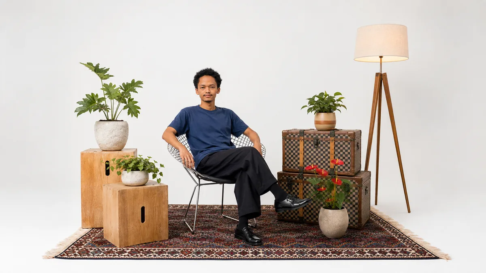

Moto Digital Dash
A glanceable motorcycle dashboard. The challenge was making something readable at speed, in sunlight, on a vibrating handlebar. Every pixel had to earn its place.
Nairobi — UX research, UI design, front-end
UX researcher, UI designer, and lately, an AI wrangler. I do the thinking, the exploring, and the design — then I let AI handle the heavy lifting on the technical side. It's an AI-eat-AI world out there, so you might as well have one on your team. I just make sure it builds something humans actually want to use.

I care about the space between how people actually behave and how systems expect them to. Most of my work is just trying to close that gap — making digital things feel a little more human without overcomplicating them.
These days I'm exploring, learning, and building with AI as a creative partner. The human effort goes into the design decisions — the taste, the empathy, the "why does this feel wrong" instinct. The technical execution? That's where AI earns its keep. Turns out the robots are pretty good at code if you give them good directions. Who knew.
A mix of research, design, and code. I like wearing different hats.
Talking to users, watching how they actually use things, and turning that into decisions.
iOS & Android interfaces that feel native, not like a website crammed into a phone.
Bridging physical and digital for hardware products. Screens you interact with in the real world.
Building component libraries and guidelines that keep things consistent as products grow.
Testing ideas before writing real code. Breaking things early so they work later.
Clean HTML, CSS, and enough JS to ship it. Looks right from 320px to 4K.
Not a polished portfolio — more like a log of problems I found interesting.
A glanceable motorcycle dashboard. The challenge was making something readable at speed, in sunlight, on a vibrating handlebar. Every pixel had to earn its place.
A watch face for hikers who don't want to fiddle with their wrist mid-trail. Show the essentials, hide everything else.
A tiny AI guide that lives on beben.design. Instead of making people dig through menus, Sprite helps them find what they're looking for conversationally. Small, helpful, stays out of the way.
Seven client and personal identities — logo design, branding, packaging, print and web. Nanyuki Holiday Home, Jimmy Rosemond Book Launch, Carbon Slash, Raha Luxury Concierge, Neopolaris AI, Queens of the Dust and Munch Hub, collected in one deck.
Figure out what we're actually solving. Talk to people, map the problem, cut the noise.
Build something clickable before writing real code. Break it, fix it, repeat until it feels right.
Get it out there, watch how people use it, and keep adjusting. The best version is always the next one.
When I'm not designing, I'm usually running. Clears my head, helps me think. Most of my best ideas happen somewhere around kilometre five.
I'm always happy to chat about a project, an idea, or just what you're building. No pitch, just a conversation.